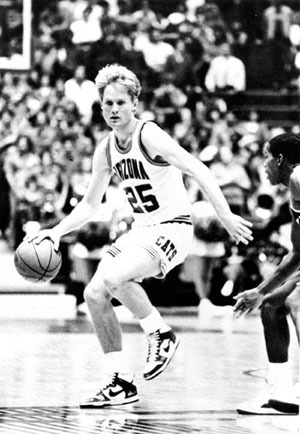
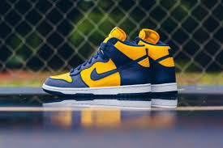
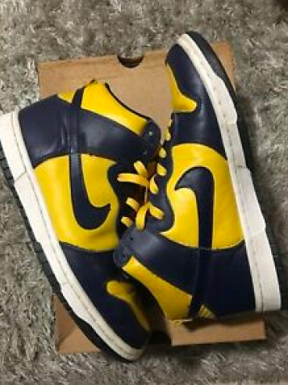
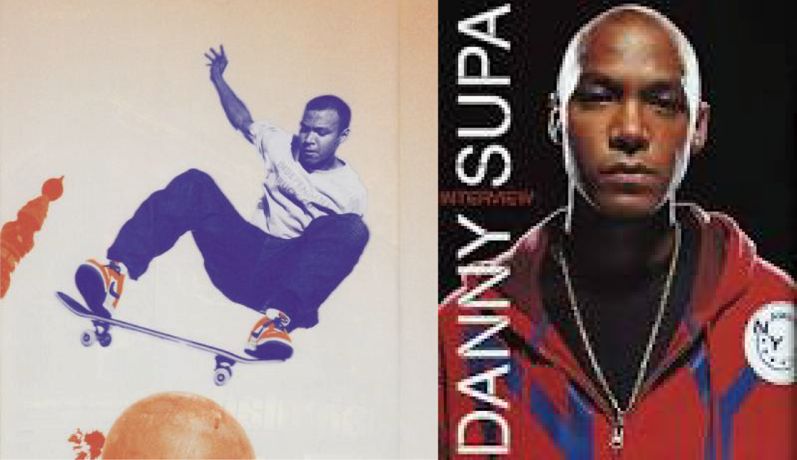
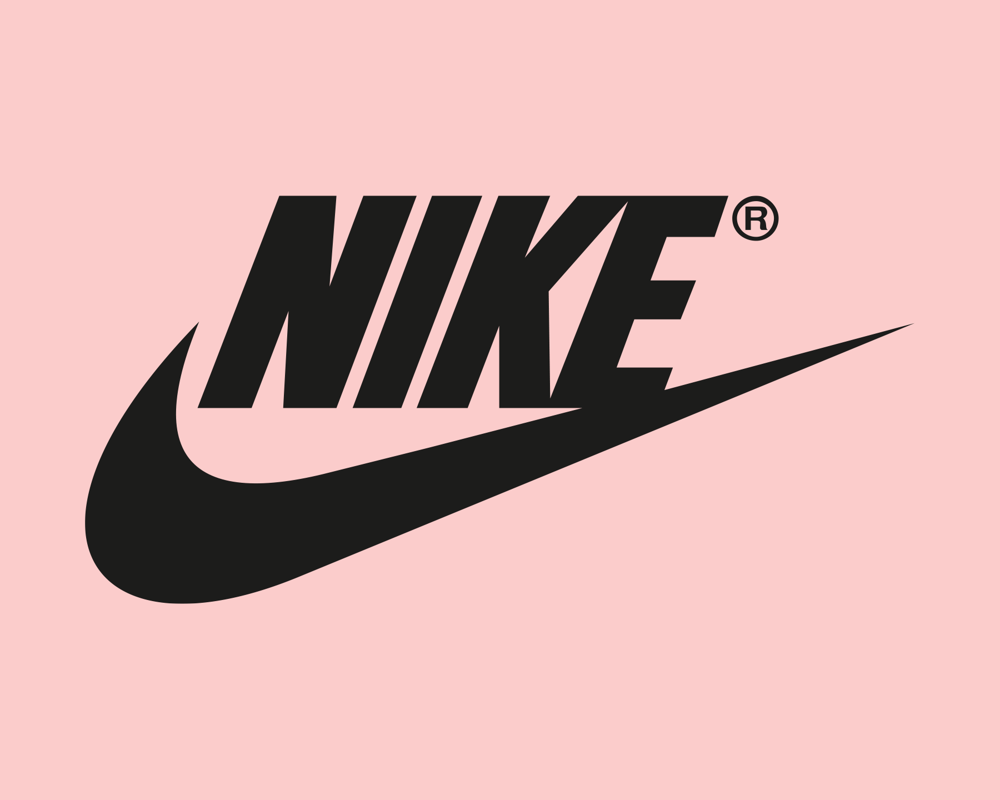
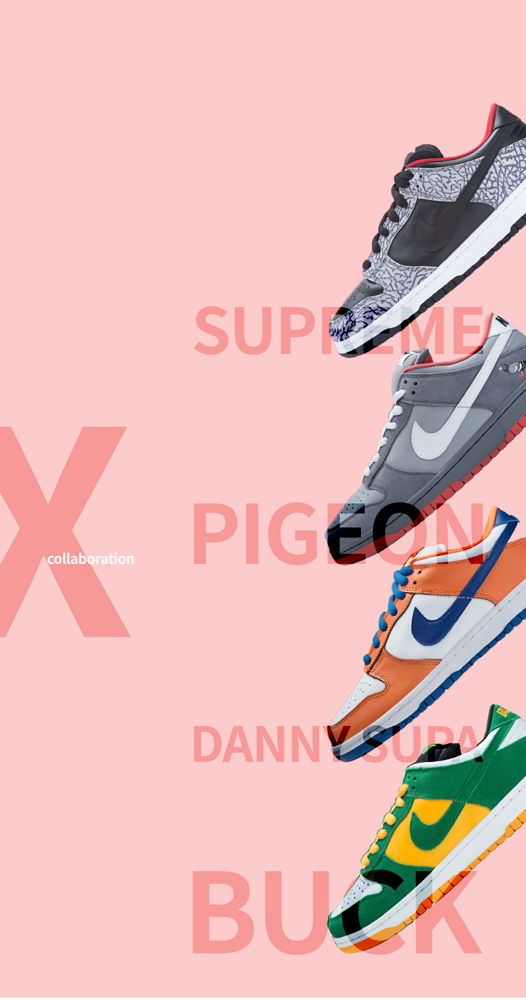
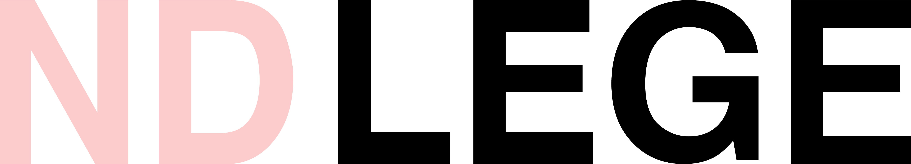
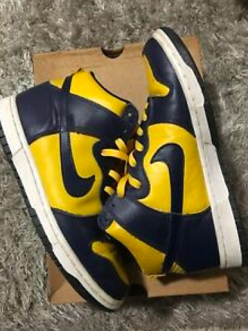
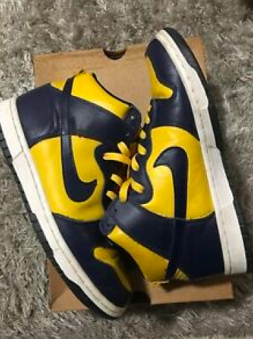

NBA가 유행이고 농구에 대하여 열광하는 미국인들에게
새로운 농구화가 나온 것이다.
기존에 유명세를 떨치고 있던 에어 조던1의 솔에 터미네이터
어퍼를 적용한 제품이며
이 제품들을 당시 인기가 가장 많았던 12개의 대학농구 팀을 위한
슬로건 ‘Be true to your school’로 유명세를 떨치게 된다
이것이 덩크의 이름에 대학교 이름이 붙은 이유이다.

덩크를 신고 코트 위를 누비는 대학농구 선수들
1998

조던의 뒤에 가려진 덩크
그 이후에 조던의 인기 뒤에 숨은 덩크는
비주류 모델로 몰락했고
올드 스쿨 매니아들에게 단순히 콜렉팅 대상이 되었다.
그러나 98년도에 85년도의 OG컬러를
그대로 계승한 레트로 모델들이 발매가 되었고
그때 일본에서 조금씩 관심이 생겼으며 OG컬러를 반대로
색을 뒤집은 리버스 모델을 컨셉 재팬으로 내놓았으나
처음의 인기에 비해서는 많이 적었다.
덩크 로우의 탄생(1999)

2002

보드의 열풍이 불다
덩크를 지금의 덩크로 만든 건 ‘컬러’다.
당시 덩크는 각 농구팀을 구별하고자 화려하고 눈에 띄는 색깔로 디자인되었다.
그때만 해도 운동화는 흰색이나 단조로운 단색으로 제한되었던 시대.
덩크 특유의 화려한 색상은 ‘센세이션’에 가까운 반향을 불러일으켰고,
우수한 내구성과 편안한 착화감까지
삼박자를 이루며 거리의 젊은 스케이트 보더마저 매료시켰다.
덩크의 혁신적인 색깔과 디자인은 그 자체로 스트릿 컬쳐의 자유와
반항 정신을 대변하기 충분했다.
그렇게 이 운동화는 보더들에게 이식되었다.

NIKE SB라인에 참가
일반 덩크와 SB덩크가 나뉘는데
여기서 당시 스케이트 보드의 유행의 시기와 그 때의 통 넓은 바지와 잘 어울리며
과감한 마케팅과 당시 최고 스케이트 보드 스타 폴 로드리게스와의 협업
그리고 수많은 스타들과의 협업으로
다시 덩크의 인기를 몰기 시작한다.
그리고 SB라인은 한정판의 특징을 강하게 띄기 시작합니다.

2005

collaboration
전설적인 콜라보레인션들이 많이 나온 해입니다.
수 많은 스타들과 그 시대의 가장 유명한 스트릿 브랜드와의
협업으로 가장 가치가 올라가고 인기가 많아
리셀가 또한 최고치를 달성한 해이며
현재까지도 인기가 많고 수요가 많아
물량이 부족한 현상이 있는 제품들이 정말 많은 해입니다.
 
